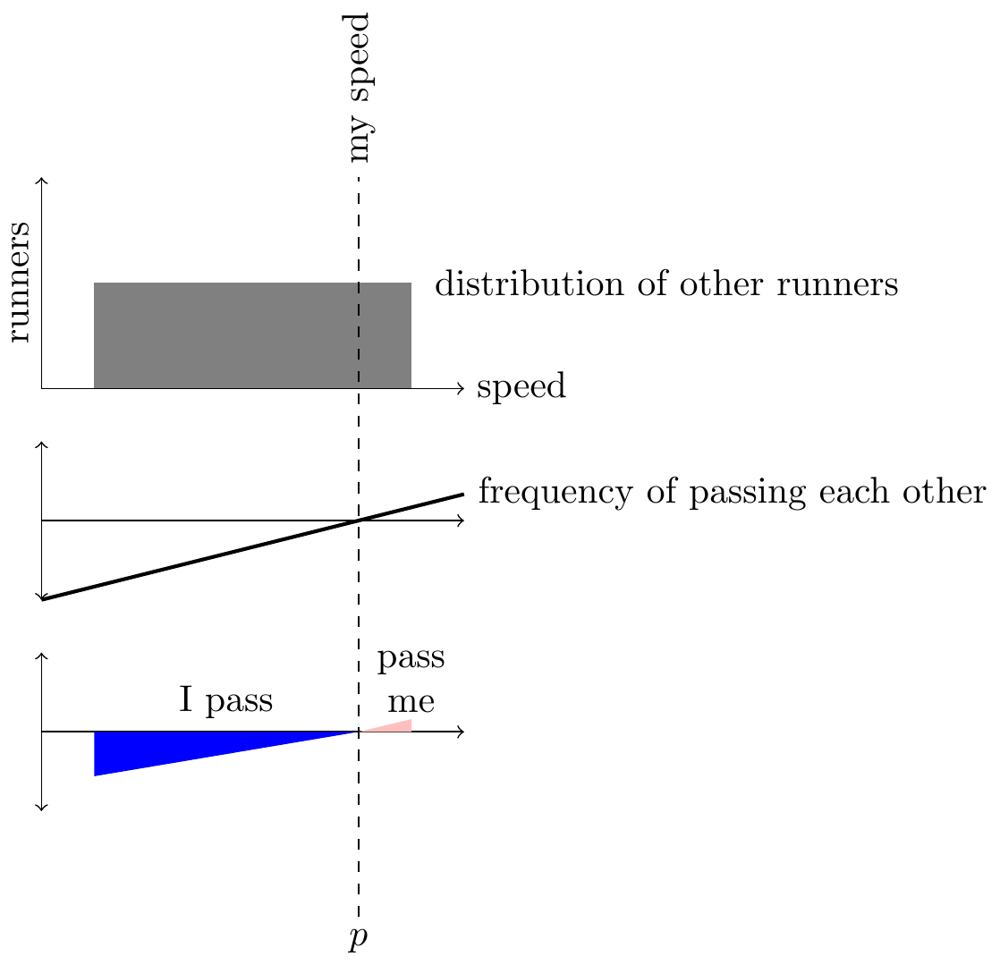
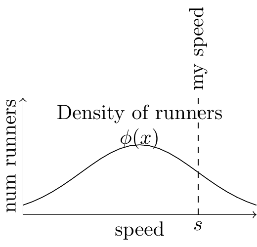
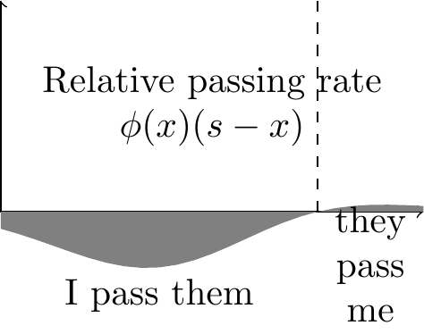
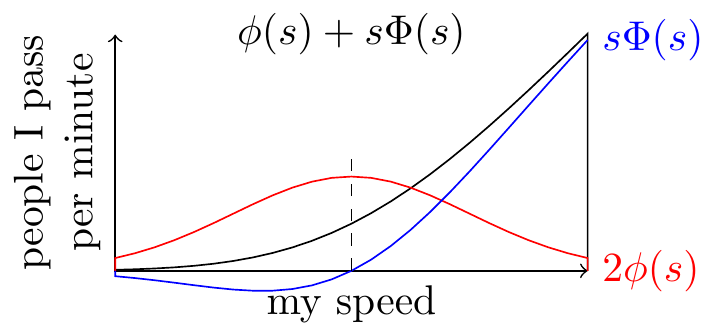
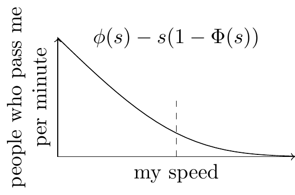
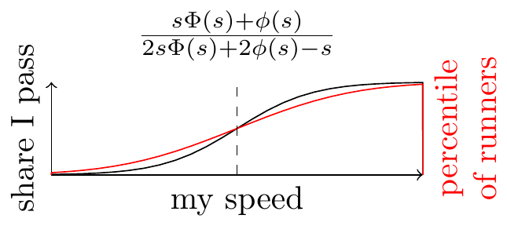

Suppose you overtake 10 times as many runners as overtake you. What can you say about your speed relative to the other runners?
For concreteness, suppose everyone is running around a circular track in the same direction forever, and each person started at a random point.
Answer: We can write the general relationship as follows: \[\frac{\text{frequency of passing}}{\text{frequency of being passed}} =\frac{\text{share slower runners}}{\text{share faster runners}} \times \frac{\text{avg excess above slower runners}}{\text{avg lag behind faster runners}} %= \frac{E[s-x|x<s]}{E[x-s|x>s]}\frac{P(x<s)}{P(x>s)} \]
The ratio of slower/faster will not generally be equal to the ratio of passing/passed. The reason is that your propensity to encounter another runner depends on the difference in speeds: you will rarely pass or be passed by those who run similar speeds to you.
If the distribution of speeds is symmetric and log-concave, your frequency of passing runners will exaggerate your position in the distribution of speeds. E.g. if you pass 10x as many people as pass you then there are fewer than 10x as many people who are slower than you relative to people who are faster than you. This covers normal, logistic, & uniform distributions.
Some additional implications:
- If you’re passing the same number of people as pass you, then you must be running exactly the mean speed.
- If the distribution of running speeds is sufficiently fat-tailed (e.g. a \(t\)-distribution with \(\mathrm{df}<2\)), then you can get the opposite implication.
- (due to Matt Parry) If mean and variance exist, then your pass/passed ratio also gives an upper bound on how many standard deviations above the mean you can be: \[s-\mu \le \frac{r-1}{2\sqrt{r}}\sigma\] where \(r\) is your ratio of pass/passed.
Derivation
\[\begin{aligned} s &= \text{my speed} \\ x &\sim \phi, \text{other runners' speeds} \\ p=\text{runners I pass} &= \int_{-\infty}^s \utt{\phi(x)}{runners}{at speed $x$}\utt{(s-x)}{frequency}{we pass}dx\\ &= s\Phi(s)-\int_{-\infty}^sx\phi(x)dx \\ q= \text{runners who pass me} &= \int_{s}^\infty \utt{\phi(x)}{runners}{at speed $x$}\utt{(x-s)}{frequency}{we pass}dx\\ &= \int_{s}^{\infty}x\phi(x)dx-s(1-\Phi(s)) \\ r=\text{ratio pass/passed} &= \frac{s\Phi(s)-\int_{-\infty}^sx\phi(x)dx} {\int_{s}^{\infty}x\phi(x)dx-s(1-\Phi(s))} \\ &= \utt{\frac{E[s-x|x<s]}{E[x-s|x>s]}}{ratio of avg excess above slower}{to avg lag behind faster} \utt{\frac{P(x<s)}{P(x>s)}}{ratio of slower}{to faster} \end{aligned} \]
This last expression is the most important. It implies you can figure out your rank among runners \(\frac{P(x<s)}{P(x>s)}\) if you know the relative distance in speeds among those who are faster and those who are slower. If the speed differences are identical then the two ratios are the same. For the Normal distribution, the conditional expectations are such that the slower runners are closer than the faster runners, implying the exaggeration property.
Derivation of the final condition: \[\begin{aligned} E[x|x<s] &= \frac{\int_{-\infty}^s x\phi(x)dx}{\Phi(s)}\\ &= s-\frac{p}{\Phi(s)} && \text{(from above)} \\ E[x|x>s] &= \frac{\int_{s}^{\infty} x\phi(x)dx}{1-\Phi(s)}\\ &= s+\frac{q}{(1-\Phi(s))}\\ \frac{E[x|x<s]-s}{E[x|x>s]-s} &= -\frac{p}{q}\frac{1-\Phi(s)}{\Phi(s)}\\ r=\frac{p}{q} &= \frac{E[s-x|x<s]P(x<s)}{E[x-s|x>s]P(x>s)} \end{aligned} \]
One sufficient condition for exaggeration: let \[\begin{aligned} U_s &= s-x \mid x<s \\ V_s &= x-s \mid x>s \end{aligned} \]
Then \[\begin{aligned} E[U_s] &= E[s-x|x<s] \\ E[V_s] &= E[x-s|x>s] \end{aligned} \]
so exaggeration holds if \(U_s\) stochastically dominates \(V_s\). Their survival functions are \[\begin{aligned} P(U_s>t) &= \frac{F(s-t)}{F(s)} \\ P(V_s>t) &= \frac{1-F(s+t)}{1-F(s)} \end{aligned} \]
Now suppose the density is symmetric about \(c\) and log-concave. Then \(F\) is log-concave, so for each fixed \(t\ge 0\) the function \[g_t(x)=\log F(x-t)-\log F(x)\]
is increasing in \(x\). By symmetry, \[\frac{1-F(s+t)}{1-F(s)}=\frac{F(2c-s-t)}{F(2c-s)}\]
and if \(s\ge c\) then \(2c-s\le s\), so \[\frac{F(s-t)}{F(s)}\ge \frac{F(2c-s-t)}{F(2c-s)}=\frac{1-F(s+t)}{1-F(s)}\]
for all \(t\ge 0\). Therefore \(U_s\) stochastically dominates \(V_s\), so \[E[s-x|x<s]\ge E[x-s|x>s]\]
and exaggeration follows.
Bound in standard deviations (assuming mean and variance exist): \[\begin{aligned} \mu &= E[x] \\ \sigma^2 &= \mathrm{Var}(x) \\ a &= E[(s-x)_+] \\ b &= E[(x-s)_+] \\ r &= \frac{a}{b} \\ s-\mu &= E[s-x] \\ &= a-b \\ &= (r-1)b \\ E|s-x| &= a+b \\ &= (r+1)b \\ &= \frac{r+1}{r-1}(s-\mu) \\ E|s-x| &\le \sqrt{E[(s-x)^2]} \\ &= \sqrt{(s-\mu)^2+\sigma^2} \end{aligned} \]
So \[\begin{aligned} \frac{r+1}{r-1}(s-\mu) &\le \sqrt{(s-\mu)^2+\sigma^2} \\ \left(\frac{r+1}{r-1}\right)^2(s-\mu)^2 &\le (s-\mu)^2+\sigma^2 \\ \frac{4r}{(r-1)^2}(s-\mu)^2 &\le \sigma^2 \\ s-\mu &\le \frac{r-1}{2\sqrt{r}}\sigma \end{aligned} \]
Uniform Distribution of Speeds
With a uniform distribution you can easily see that the number of passing events is proportional to the area of the triangle, and so proportional to the square of the number of runners below/above your speed.
Normal Distribution of Speeds





\[\begin{aligned} s &= \text{my speed} \\ x &\sim \phi, \text{other runners' speeds} \\ \text{runners I pass} &= \int_{-\infty}^s \utt{\phi(x)}{runners with}{speed $x$}\utt{(s-x)}{rate I}{pass them}dx\\ &= s\Phi(s) - \int_{-\infty}^s x\phi(x) dx \\ &= s \Phi(s) + \phi(s) \\ & \text{(last step uses $\phi=N(0,1)$)}\\ \text{runners who pass me} &= \int_{s}^\infty \utt{\phi(x)}{runners with}{speed $x$}\utt{(x-s)}{rate they}{pass me}dx\\ &= \left[ -\phi(x) -s\Phi(x) \right]^\infty_s \\ &= (0+\phi(s)) - (s-s\Phi(s))\\ &= \phi(s) - s + s\Phi(s) \\ r=\text{ratio pass/passed by} &= \frac{s\Phi(s)+\phi(s)}{\phi(s)+s\Phi(s)-s}\\ \text{share I pass} &= \frac{s \Phi(s) + \phi(s)}{s \Phi(s) + \phi(s)+\phi(s) - s + s\Phi(s)} \\ &= \frac{s \Phi(s) + \phi(s)}{2s\Phi(s) + 2\phi(s) - s} \end{aligned} \]
Note on derivatives:
\[\begin{aligned} \phi(x) &= \frac{1}{\sqrt{2\pi}}e^{-x^2/2} && \text{(standard normal)}\\ \phi'(x) &= -x\phi(x) \end{aligned} \]
Simulations
Each cell in the table below shows first the ratio pass/passed, then the ratio slower/faster, for a given speed \(s\). We can see that exaggeration holds in the Gaussian and \(t(\mathrm{df}=2)\) examples, but not in the \(t(\mathrm{df}=1)\) example.
Note that \(t\) with \(\mathrm{df}=1\) is weird because it doesn’t have an expectation, i.e. \(x\phi(x)\) never goes to zero, so it is harder to think about.
| speed (\(s\)) | N(0,1) | t(df=1) | t(df=2) |
|---|---|---|---|
| -1.0 | 0.077 / 0.21 | 0.53 / 0.34 | 0.26 / 0.28 |
| 0.0 | 1 / 1.1 | 1 / 1.1 | 1 / 1.1 |
| 0.5 | 3.5 / 2.4 | 1.4 / 1.9 | 2 / 2.1 |
| 1.0 | 13.0 / 5.8 | 1.9 / 3.1 | 3.8 / 4 |
| 2.0 | 238 / 48.7 | 3.2 / 5.8 | 10.3 / 10.3 |
| 10.0 | 1.46e+25 / Inf | 23.3 / 27.8 | 249 / 202 |
References
Mathoverflow (2010) “You pass X people and Y people pass you: how relatively fast are you?”
There are a number of sketches of answers, but no explicit solutions. A few answers wrongly conclude that the ratio of overtakes to being overtaken is equal to the ratio of slower to faster runners.
Clevenson, Schilling, Watkins and Watkins (2001) “The Average Speed on the Highway”
They show that if the number of cars you pass is equal to the number of cars that pass you then you must be driving the average speed (not necessarily the median speed).
Schilling (2006) “Do You Know Your Relative Driving Speed?”.
This seems to have most of the same results as the note here.